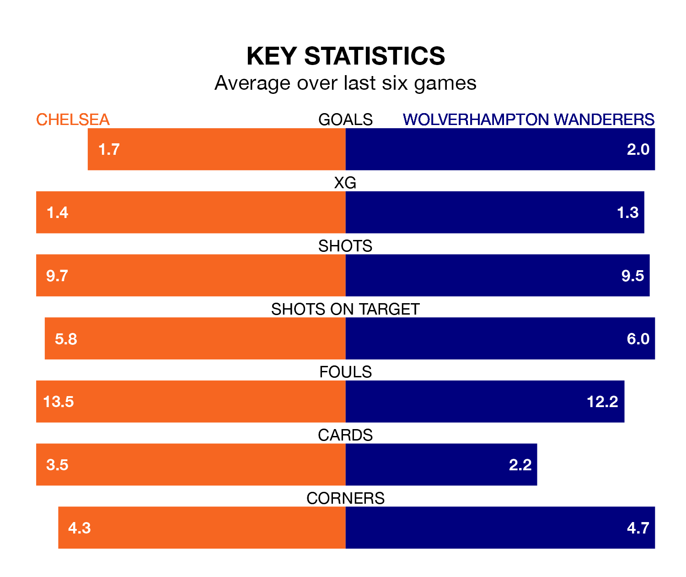

Chelsea are heavy favourites to keep all three points at home in Sunday's early kick-off against Wolverhampton Wanderers.
The Blues, who sit 10th in the Premier League with 22 games played, are priced at 1.6 to seal victory at Stamford Bridge.
Sitting one place and two points behind them in the table, Wolves are 4.8 to win with *Betting Company*, while the draw is at 4.0.
In the last 10 years, Chelsea and Wolves have played each other on 12 occasions. They won four each, and they drew four times.
On average, the Blues scored 1.5 goals and Wolves 1.0 in those matches.
Their last meeting was on December 24, when Wolves won 2-1 at home.
With 33 goals in 22 games so far this season, Wolves are scoring at below the league average rate with 1.5 goals per game. And they are conceding at an average rate, letting in 35 goals at a rate of 1.6 per game.
Chelsea, meanwhile, are average scorers, with 1.6 goals per game. They have also conceded 1.6 goals per game.
In Hee-Chan Hwang, the visitors have one of the league's most on-form strikers so far this season. He has notched 10 goals in 20 appearances, to sit sixth in the scoring charts.
His goal rate of one every 145 minutes is quicker than that of Nicolas Jackson, the Blues' top scorer with a goal every 208 minutes, and a total of seven goals in 19 games.
The home side are in reasonable form in the Premier League, with four wins and two losses from their last six games.
With three wins and a draw over that period, Wolves's form is slightly worse – they have taken 10 points from 18, compared to Chelsea's 12.
Chelsea's last match was on Wednesday, a 4-1 loss against Liverpool, with Christopher Nkunku getting the goal for the Blues.
Wolves lost 4-3 against Manchester United last time out, on Thursday, with Max Kilman, Pablo Sarabia and Pedro Neto on the scoresheet.
Sunday's match will be refereed by Tim Robinson, who has taken charge of 14 Premier League games so far this season, issuing no red cards and booking 61 players. He has awarded three penalties.
The last Chelsea game Robinson refereed was a 2-0 away win against Fulham on October 2. His last Wolves match was their 2-1 win at home against Tottenham Hotspur on November 11.
Updated: 15:45 (UTC), 02/02/24